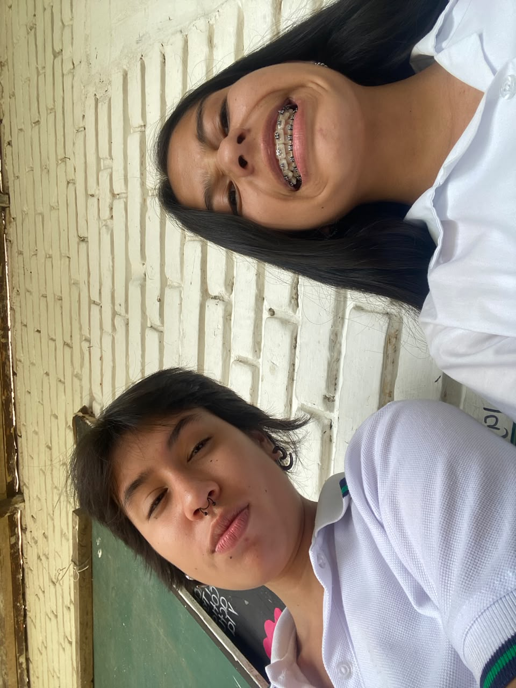

Sobre mí
Ana Sofía Buitrago Mora
Soy una estudiante de 11° de educación media en el Gimnasio del Calima, y me apasiona aprender idiomas, especialmente inglés y francés, y la historia. Me gustaría continuar mis estudios en una universidad y desarrollar mis habilidades para comunicarme mejor en otros idiomas y aprender sobre diferentes culturas.
Mis aspiraciones educativas
Después del colegio me gustaría estudiar una carrera relacionada con las lenguas extranjeras, especialmente con el inglés y el francés. Quiero desarrollar mis habilidades para comunicarme mejor en otros idiomas y continuar aprendiendo sobre diferentes culturas. Me gustaría continuar mi formación en una universidad y prepararme para mi futuro profesional.
Mis intereses tecnológicos
Mi intereses tecnológicos están centrados en el diseño gráfico y la programación. Me gusta aprender sobre nuevas tecnologías y cómo se pueden aplicar en diferentes campos de la educación y la comunicación. Me interesa explorar cómo la tecnología puede mejorar la forma en que nos comunicamos y aprendemos.
Otros intereses
Además de interesarme por los idiomas y la historia, también me gusta la música y el arte.